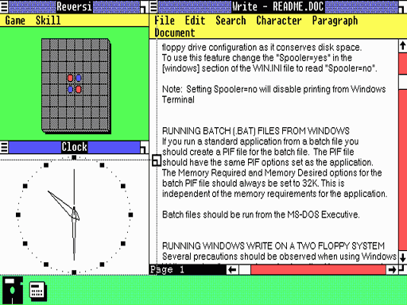

The windows UI is easy to get used to.
The mac UI is easy to get used to if your old PC broke and you hate Windows.

The windows UI is easy to get used to.
The mac UI is easy to get used to if your old PC broke and you hate Windows.
…
:hmph:
Kinda hard to say when your computer performs slower you can perform various tasks faster…
I was merely pointing out that he pretty much said, “OSX is slower, Windows is faster, but of course it’s personal preference.”
I know, I was agreeing with you.
How do you do that? I didn’t know about that feature.
Win+Tab
Keep pressing to scroll through windows (both open and minimized) or you can click on what you want.
What exolved into OSX (OSX does not use OS/System Classic as a base)

What evolved into Windows all-verions
(I know, an unfair comparison seeing that one is from 1992 and the other from 1985 and doesn’t really prove a point, why am I posting this?)
I used and liked OSX before people it was popular.
I used PC after using Mac in 1998, and as a child of 6 years old I noticed how much slower it ran. That was Windows 98 against Mac OS 9. However, OS/System classic didn’t have memory protection, so it was missing something that Windows had, although most things Windows had they borrowed from other operating systems, such as minimise/maximise and icons, they borrowed from Apple’s Finder 1.0, Window 7’s task bar seems suspiciously similar to KDE’s design, Vista’s “sidebar” acts just like OSX’s “Dash Board”, the Windows Snap feature has been in Linux desktop environments since the 90s, Windows XP’s user interface is commonly known to have been designed to compete against Apple’s OSX eyecandy look, hence why XP looks like how it is.
Heck, Microsoft even copied Apple with the computer mouse!
OSX Performs better than Windows for me, this is OSX against Vista/XP doing video and music editing, Apple’s switch to Intel core ruined some parts of OSX (Benefitted more though), it acts more like a PC so it crashes like a PC, not sure about the performance of Windows7, I haven’t used that much at all, will try it in future.
Using KDE right now, let’s compare the KDE Task Manager plasmoid to the 7 task bar.
Can’t pin programs to it, can’t have running programs appear as icons, hmm, doesn’t really seem that similar.
Not really. That’s not to say that Window’s version is superior, I actually like OSX’s implementation better in some ways, but they are quite different.
orly? Windows snap to other windows, but not to edges of the screen. You can shove windows onto other desktops by pushing them to the edges of the screen, but not make them snap to certain positions. I know of several ways to do it, but they aren’t particularly easy, although the next version of kde (4.4, it’s in alpha/beta now) has a nice snap feature that looks like it works like Windows’.
And apple didn’t copy it from the Xerox PARC?

Wow they can’t even do simple things like stealing ideas properly…
Apple thought that most computer users would be too dumb to have more than 1 button on a mouse so they “redesigned” it for the better…
Poor mac users of the past…
i am 12 and wat is this
They look like quotes to me.
that’s refering to 4chan’s attack of youtube. with porn.
Like we didn’t know his approximate age already…
Everywhere he goes he posts stupid shit. It’s almost annoying enough to make me care enough to be annoyed.
I’ve been looking around for an unbiased speed comparison between Snow Leopard and Windows7 and unfortunately I can’t seem to find any even handed ones. Either it’s strongly weighted to Windows, or OSX. You’d think something like this would be easier to find.
Same. The only slightly meaningful one I found compared Windows 7 to OS X 10.6 running on a Mac, which REALLY isn’t a meaningful comparison if you’re looking for an overall speed comparison of the two, since the same test said that it was probably the drivers and BootCamp that were causing the slowdown.
And that Win+Tab alternatively looks fancy, but I still prefer the old Alt+Tab system. In fact, when it was brought in in Vista it seemed to be a wannabe version of expose, which it is.
Founded in 2004, Leakfree.org became one of the first online communities dedicated to Valve’s Source engine development. It is more famously known for the formation of Black Mesa: Source under the 'Leakfree Modification Team' handle in September 2004.


{kind=link}